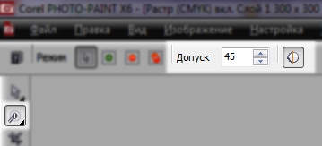

ВОПРОС / ОТВЕТ ДЛЯ НАЧИНАЮЩИХ
polzovatel-902 / 13.07.2010, 09:21/00:41
Форум:
Объясню на примере, чтоб было понятней... Открываю в кореле картинку (футболку с надписью) в формате JPG, мне нужно вытянуть из футболки надпись, т.е разъеденить файл... Говорят нужно формат изменить, еще что-то... Объясните, пожалуйста, что нужно сделать для этого...? Заранее спасибо.
Добрый день уважаемые участники данной конференции!
При работе с Corel Draw обнаружил проблему, допустим я взял картинку из гугла бокал шампанского, и вставил на изображение с фоном. так вот бокал шампанского идет вместе с белым фоном вокруг самого бокала. как мне средставами корела обвести только этот бокал и вырезать весь лишний фон который идет на изображении, т.е оставить только бокал шампанского!
буду очень благодарен за обьяснение!
если не поняли мой набор букв то просьба загляните в прикрепленные изображения
!
y4inikcorel,
Вы затронули очень древнюю, тяжелую и большую тему. На эту тему написаны тысячи книг и статей :)
А если кратко, то такие вещи лучше делать в программах по обработке растровых изображений. Таких, как Corel Photopaint или Adobe Photoshop. А в CorelDraw вставлять лучше уже изображение без фона.
Можно это сделать и в CorelDraw, но сложнее.
Хотите — попробуйте. Есть разные способы. Например, можно, нажав F10, добавлять узлы на "границу" изображения и маскировать его ломанной линией, примерно как это делают в растровых редакторах с помощью полигонального лассо.
Или сделайте векторную фигуру по форме бокала и используйте ее, как Power Clip. Т. е. вставьте туда ваш бокал. Белый фон будет скрыт.
Если быстро и просто, в двух словах, то...
1) Выделить растр (картинку с бокалом) и на панели инструментов нажать кнопку «Редактировать растровое изображение». Картинка появится в окне Corel Photo-Paint.
2) В окне Photo-Paint в меню выбрать Объект > Создать > Из фона.
3) Нажать клавишу W. Активным инструментом станет «Волшебная палочка».
4) Качество обрезки фона, т.е. точность и плавность «линии отреза» настраиваются здесь: 
5) Щёлкнуть по белому полю, которое следует удалить. «Волшебная палочка» создаст маску (выделение), включающее область белого цвета, к которой её применили.
6) Нажать клавишу Delete (Del).
7) Закрыть окно Corel Photo-Paint. На вопрос, сохранять ли изменения, надо согласиться. В окне CorelDraw растр будет уже с «обрезанным» фоном.
c0oller,
Размеры листа и макетов всегда одного размера?
Потом этот файл отправляется на печать?
На листе размещаются один вид макета?
Можно воспользоваться раскладкой из предварительного просмотра.
Или создать документ с белыми подложками, размером с один макет, разложить их.
Включить запись макроса:
вставить один макет, дублировать его по белым подложкам, завершить запись макроса. Вынести кнопку макроса на панель,. При нажатии на кнопку, один макет будет раскладывается на лист, с учётом того, что размер листа и размер макета одинаковы при записи и при использование макроса.
Или как писали выше воспользоваться макросом CardGenerator.
Hepatitis C, да, размер листа и макетов всегда одинаковы, суть уловил, но как сделать не знаю))) можно подробнее, спасибо
c0oller, Способ через автоматическую раскладку корелдро.
Будьте внимательны, в некоторых версиях корелдро, печать через автоматическую раскладку может влиять на цвета в макете, правильно настраиваете цветовые профили.
Если кол-во видов макета больше 1 и нужно разместить их на один лист, то загружаем все макеты в один документ.
Размер листа выставляем равный размеру готового изделия, допустим, если это визитки 90х50мм, то размер листа 90х50мм тоже.
Если резка происходит в один рез (сабельный или линейный резак), то макет можно использовать без дозаливок - 90х50мм.
Если резка происходит с подрезами (гильотинный резак, вырубка/высечка), то макет должен быть с дозаливками, допустим 2мм - 94х54мм.
Вызываем меню [печать] (Файл-печать, ctrl+p, кнопкой [print]).
Выбираем принтер для печати и вносим изменения кнопкой [настройка],
Выпадающий список [страница] выбираем [Сопоставить].
Кнопкой [просмотр] вызываем меню предварительного просмотра.
В [панели инструментов] выбираем вкладку [раскладка].
Вводим количество макетов по ширине и по высоте.
Если резка происходит в один рез, отправляем в печать, если страниц много можно отправить текущую (клик правой кнопки мыши-печатать текущий лист, ctrl+t).
Если резка происходит с подрезами, увеличиваем расстояние между метками реза (макетами) вертикально и горизонтально, левым кликом мыши между областями в раскладке. Выставляем 4мм (расстояние между метками реза чаще всего равно размеру дозаливки умноженное на два).
Если кол-во видов макета больше 1, левым кликом мыши по [цифре 1] на области в раскладке и вписываем номера страниц документа.
В [панели инструментов] выбираем вкладку [метки]. Выбираем метки реза.
В [панели инструментов] выбираем вкладку [просмотр] для предварительного просмотра перед печатью.
Не надо свои термины придумывать, заменять дозаливками вылеты за обрез.
Solowejka, Так почему бы не ответить на вопрос Вам? Троллинг не для этого форума.
Hepatitis C, почему Вы решили, что моя реплика про отсебятину адресована Вам?
Если Вы чувствуете себя профессионалом и готовы любезно поделиться опытом с другими, то пожалуйста.
Но тогда уж будьте любезны изъясняйтесь профессиональным языком.
К сожалению, в Вашем совете кроме новопридуманных терминов есть еще некоторые моменты, которые позволяют усомниться в Вашем профессионализме. Лучше с такими советами не торопиться, чем заливать их на форум и потом обвинять в троллинге усомнившегося в Вашем профессионализме.
Поддерживает ли Corel Draw аппаратное ускорение от AMD DirectCompute?
Имеются документы с сотнями тысяч объектов, процессор i7 3820, нвидия 680gt. Cудя по всему, GPU от нвидиа никак не задействуется в работе Corel Draw.
Сможет ли AMD Radeon ускорить обработку отрисовки этих объектов? Или лучше поменять процессор на i7 6 ядерный...
Страницы